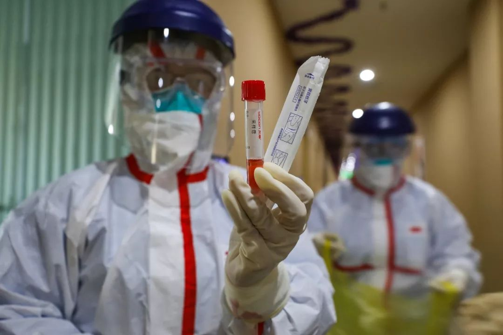

肺炎日记|2月5日：疫情不确定性增加，危重病人三周定生死
原文链接 备份链接 【财新网】（记者 黄蕙昭 综合）新型冠状病毒疫情不确定性增加：重症病例上升，聚集性感染突现，疫情防控难度和压力不减。 2月4日，全国新型冠状病毒新增确诊病例3887例，新增死亡65例，新增疑似病例3971例，较2 …

人畜共患病（Zoonosis）是现代社会的一种非常危险的新型传染病。这些病毒（菌）平时躲在动物体内，不断地进行基因突变和基因重组，伺机寻找入侵人类的机会。
科学界主流观点认为，新冠与非典的源头来自蝙蝠，两场疫情相似度很高，可以相互借鉴。本文试图对当年那场非典疫情做一些简单的分析，再结合进化论原理对新冠病毒的基本特征做一些解释，希望能帮助大家理解国家防疫政策的必要性，以及减少不必要的恐慌。
文 | 袁越

非典是怎么被控制住的？
非典（SARS）疫情于2002年底爆发，2003年7月结束，历时半年多，这个速度在人类和传染病的搏斗史上算是非常快的了，尤其对于呼吸道传染病来说更是快得惊人，主要理由有3个：

2003年5月，北京小汤山医院建成，专门收治“非典”病人。
1.非典（以及新冠）都是RNA病毒，RNA分子稳定性差，极易降解，在宿主细胞内的寿命不会很长，所以受RNA病毒感染的病人通常只有两个结果：要么彻底治愈，病毒完全消失；要么病人死亡，病毒同样完全消失，基本上没有其他选项。（这一条不绝对，有例外，后面再详细说）
2.RNA复制时的出错率比DNA高很多，所以RNA病毒的突变率非常高，这也是RNA病毒比较难以对付的主要原因。但非典病毒RNA自带一个纠错机制，突变率要低一些，再加上非典病毒是单链RNA，不太容易发生基因重组。相比之下，流感病毒基因组包含8段RNA小分子，如果一个宿主细胞同时感染了两个流感病毒，其RNA片段可以很容易地互换，随机组合成全新的流感病毒，这就是为什么流感病毒那么容易变异的原因，也是为什么流感疫苗每年都要重打的原因。
事后研究表明，非典病毒在整个疫情期间只发生了很少的变异，没有影响这个病毒的基本性质，对付起来要容易得多。新冠病毒和非典病毒极为相似，两者的突变率也应该很接近，这是个好消息。

社区隔离点病毒核酸检测。（远征 摄）
3.非典感染者在未出现症状之前基本上不具备传染性，所以防疫部门只要严密监视流动人口，把所有发热的病人监视隔离就行了，极大地减轻了工作量。如果当年需要把所有到过疫区的人全都隔离起来，防疫成本要高得多，疫情也不会那么快就结束。
截止到目前为止，已有中国、德国和日本的科学家报告了未出现症状的新冠传染案例，但德国方面刚刚更正了那篇论文，原因是论文作者没有直接访问患者，只是采访了和患者接触过的4个人就得出了无症状传染的结论。但后来科学家们采访了病人，发现那位病人其实已经出现了症状，只是周围的人没有看出来而已，这是个更好的消息。
当然了，这篇更正并不能证明新冠病毒一定没办法做到无症状传染，但从目前的情况看，这种情况即使有，概率也是非常低的，而且无症状者的感染能力也不会很高，暂时还不用过分担心。另外，如果真的出现大量无症状感染者，那就说明新冠病毒的毒性非常低。从某种程度上说，这也是个好消息。

远征 摄
事实上，新冠病毒到底有没有无症状传染非常重要，甚至可以说是本次防疫工作最重要的关键点。因为假如无症状传染成为常态，那就意味着目前的全民隔离政策会持续相当长的时间，不但老百姓很可能受不了，对中国经济的打击也将是巨大的。
总结：非典疫情来得快结束得也快，这是全体人类共同完成的一项了不起的壮举，充分展示了现代医学的力量。如果这个疫情爆发在古代，后果不堪设想。但是，因为这个疫情结束得太快了，而新药研发和疫苗开发的速度却都太慢，基本上没有发挥出任何作用，所以这个病还是导致了很多人的死亡。未来我们必须加快研发速度，才能追得上病毒的脚步。
非典为什么那么厉害？
非典病毒在全世界范围内一共感染了8098人，总数并不算太高，但其中有774人死亡，致死率接近10%，相当高了。非典为什么这么厉害呢？下面从3个方面回答这个问题：
1.病毒的终极目的绝不是要杀死宿主，它只想利用宿主复制自己，然后扩散出去。但病毒复制自己的时候肯定要占用宿主的宝贵资源，病毒扩散时往往也会破坏宿主的细胞，两者都会导致宿主生病，所以宿主生病是病毒在完成自己生命周期的过程中出现的一个副产品。
比如，非典病毒在入侵人类呼吸道表皮细胞后，便会利用这些细胞完成对病毒RNA的复制和蛋白质外壳的生产。新病毒组装完成之后便会冲破细胞膜逃逸出来，这个过程导致了呼吸道表皮细胞的大面积死亡，这就是为什么非典病人会感到喉咙疼的原因。
2003年6月11日，加拿大多伦多综合医院，两名穿着SARS防护服的医护人员从救护车上抬下一名病人。
2.曾经有一种传染病理论非常流行，大意是说，如果一种烈性病毒感染了宿主，那么感染持续的时间越长，病毒的毒力就越弱，最后双方一定会达成妥协，变成一种互惠互利的共生关系。但后续研究证明这个理论并不完全正确，存在很多反例，不能用来解释所有的情况。
事实上，病毒毒性的高低和病毒传播方式有很大关系。比如那些依靠蚊虫叮咬传播的病毒最希望宿主失去行动能力，方便蚊虫叮咬，所以这类病毒的毒性往往很大，会让病人卧床不起。再比如，那些依靠水来传播的病毒往往会导致病人出现严重腹泻的症状，病毒正好通过排泄物扩散至宿主体外，污染居住地附近的水源。相比之下，那些依靠喷嚏飞沫来传播的呼吸道传染病往往症状较轻，因为病毒需要一个四处走动的宿主帮助自己传播，如果一棍子把宿主打倒了，自己就传播不出去了。
既然如此，为什么主要依靠飞沫传播的非典病毒毒性还是那么强呢？一个原因在于人类还有一个特殊的传播渠道，那就是病榻和医院。人类有照顾病人的传统，这是绝大多数动物所不具备的，因此很多人类病毒学会了利用这一点来传播扩散。事实上，非典病毒最重要的传染途径就是医院和家，病人卧床不起反而对病毒的传播扩散有利。
2003年5月15日，北京小汤山医院的医务人员送别康复出院的“非典”患者。
3.但最重要的原因在于，非典对于人类来说是一个新病毒，很可能遭到人类免疫系统的顽强抵抗。但是免疫系统是一把双刃剑，很容易反应过度。事实上，当年有相当一部分非典病人就是死于免疫系统的过度反应，比如细胞因子风暴（Cytokine Storm，一种强烈的免疫反应）所导致的急性呼吸窘迫综合症和多器官衰竭。
为什么免疫系统会过度反应呢？答案很可能还是和进化有关。对于一个密集的群体来说，如果其中的某一个体感染了病毒性传染病，那么最好的办法就是不惜一切代价控制病毒的扩散，而不是保住这位个体的生命，所以免疫系统针对病毒感染采取的是宁可错杀一千也不放走一个的策略，以此来维持种群的健康。
总结：一种新型传染病到底是重是轻，进程到底是快还是慢，和病毒的基因序列，以及病人的免疫系统状况等等很多因素都有关系，很难事先做出准确预测。这就需要政府的防疫部门密切监视疫情，并尽快做出恰当的反应。这方面很多国家还处在摸索的阶段，需要不断总结经验，为未来可能爆发的疫情做好准备。
非典病毒去哪儿了？
当年的非典疫情结束之后，非典病毒去哪儿了呢？如果说它彻底消失了，为什么还会出现这个和非典如此相似的新冠疫情呢？下面还是从3个方面来回答一下这个问题：
2003年5月14日，在杭州市中医院发热门诊就医的两位感冒患者正急迫地察看自己的X光片中有无肺部感染的迹象。
1.前文说过，RNA病毒稳定性差，烈性RNA病毒很难在宿主体内长期存活，所以非典病毒确实已经彻底从这个世界上消失了，只剩下少数几家病毒实验室还存有样本。
但是，同为RNA病毒，普通感冒病毒为什么还在人群中流传呢？这是因为普通感冒病毒（包括很多种）的突变率大都非常高，它们通过突变来逃过免疫系统的攻击，得以常年在人与人之间不停地转移。另外，普通感冒的症状非常轻，说明这些病毒已经在人类当中流传很久了，人类免疫系统已经适应了这些病毒，不会对它们发起严厉的攻击，所以这些病毒会活得更久一点。
也有少数RNA病毒因为各种尚不明确的原因能够长久地生活在宿主细胞内，比如丙肝病毒就是如此。因为这方面案例有限，本文不再讨论。
也许有人要问，艾滋病毒也是RNA病毒，为什么艾滋病毒活得那么久呢？答案是艾滋病毒属于一种特殊的反转录病毒（Retrovirus），能够将RNA转录成DNA，并整合进宿主的基因组内，以此来躲避免疫系统的攻击。这是符合进化论的一种策略，因为艾滋病毒是依靠性行为来传播的，它必须等到宿主更换性伴侣时才能继续传播下去，所以艾滋病毒的最佳策略就是韬光养晦，静候时机，而不是一旦感染成功就急急忙忙地疯狂复制自己，让宿主很快生病。
另外，正是由于艾滋病毒的生命周期里包含RNA和DNA这两种状态，使得这个病毒既很容易变异，给疫苗研发带来困难，又能长期躲在宿主细胞内，逃避宿主免疫系统的攻击。

远征 摄
2.既然非典病毒已经从人类社会彻底消失了，那么新冠病毒又是从哪里来的呢？答案是蝙蝠。这是冠状病毒的自然宿主，这类病毒可以永久地生活在蝙蝠体内，并在不同的蝙蝠种群之间相互传递，交叉感染。长此以往，蝙蝠种群内形成了一个异常庞大而又复杂的冠状病毒基因库，里面包含了各式各样的病毒序列，而且仍然在不停地变化之中。一旦某个突变类型正好和人类的某种细胞受体对上了，便能感染人体，完成物种间的跨越。当年的非典病毒就是这么来的，如今的新冠病毒也是这么来的。
与此类似的就是流感病毒。这种病毒平时主要躲在鸟类的身体里，也有少部分病毒以猪为自然宿主，这就是我们此前经常听到的禽流感和猪流感。这些寄宿在鸟类和猪体内的流感病毒也在不停地变异，并伺机入侵人体，情况和冠状病毒非常相似。
这类传染病统称“人畜共患病”（Zoonosis），这是现代社会的一种非常危险的新型传染病。这些病毒（菌）平时躲在动物体内，不断地进行基因突变和基因重组，伺机寻找入侵人类的机会。
人类是病毒最理想的宿主：一来人类活动范围广，足迹遍布全世界，病毒很容易在人类的帮助下迅速扩散（比如非典病毒就坐着飞机迅速扩散至全球）；二来人类的人数和体重都非常大，能装载的病毒数量也要比大多数动物大得多。唯一的问题就是人类懂科学，而且执行力很强，所以非典病毒只高兴了没几天就被人类灭绝了。
必须指出，在非典这件事上，人类的运气算是非常好的。非典只有一个中间宿主，这就是大名鼎鼎的果子狸。所幸果子狸既不是什么珍稀动物也不是宠物，随着国家一声令下，果子狸交易市场全部关闭，非典病毒便无处可藏了。

2004年1月6日，广州市森林公安警察在新源禽畜批发市场查获86只果子狸。
相比之下，沙特阿拉伯人就没有那么好的运气了。因为中东病毒（MERS）的中间宿主是骆驼，当地人不可能把骆驼全杀了，所以这种病毒至今仍然活在骆驼体内，伺机继续向人类扩散。
为什么动物能长期携带某种病毒而不生病呢？这其实是个伪问题。之前看到不少文章把蝙蝠捧上了天，蝙蝠确实是一种神奇的动物，对病毒的忍耐力要比其他哺乳动物高很多，但这绝不等于说蝙蝠就不生病。事实上，我们并不知道寄居在蝙蝠体内的那些病毒对蝙蝠造成了怎样的伤害，也许这些蝙蝠就像得了猪流感的二师兄那样，每天都要忍受病毒的折磨。
不管怎样，大多数人类并不真的关心这个问题，我们关心的是那些寄居在动物种群中的病毒会不会发生能够感染人类的基因突变，以及这些突变会不会传到人类身上。一旦这样的事情发生了，结局肯定是一场灾难，因为人类的免疫系统在首次面对陌生病毒时一定会做出激烈的反应，就像非典时发生的那样。要知道，大部分死于非典的人并不是直接死于病毒本身，而是死于免疫系统对病毒做出的过于激烈的反应。
3.到底怎样才能避免人畜共患病呢？一个明显的答案就是不吃野生动物。如果我们当初不吃果子狸，就不会有那场非典疫情。
2004年1月10日，世界卫生组织的工作人员前来视察广州的野生动物市场，确定是否还有果子狸售卖。
根据《自然》杂志发表于2008年的一篇论文统计，1940-2004年间新出现的300多例传染病当中，人畜共患病的比例为60.3%，其中71.8%来自于野生动物，家禽家畜不到三分之一。
但是，比起管住嘴，更重要是管住腿。人类和野生动物的大部分直接接触发生在野外，这里所说的绝不仅仅是旅游，更多的情况是人类为了生存的需要，不断开疆扩土，侵占野生动物的地盘，大部分来自野生动物的人畜共患病归根到底都是这么来的。
总结：即使我们管住了嘴也管住了腿，还是无法保证杜绝一切人畜共患病，因为如今的人类根本无法彻底避免和野生动物的直接&间接接触。比如禽流感和猪流感就是通过家禽家畜传染给人类的，我们怎么可能不养鸡养猪呢？猫和狗也有可能成为某种神秘病毒的中间宿主，难道我们就要因此而杀猫杀狗吗？
所以，人畜共患病是无法避免的，像非典和新冠这样的传染病未来肯定还会多次爆发，我们只能通过各种渠道普及传染病知识，提高公民的防范意识，同时大力发展由国家主导的防疫体系，加快特效药和疫苗的研发速度，积极地去应对来自大自然的挑战。
参考资料
《Spillover》，作者DavidQuammen
《Plague Time》，作者PaulEwald
《Living With Germs》，作者John Playfair
《Plagues and Peoples》，作者William McNeill
《Infectious Disease: A Scientific AmericanReader》
作者档案

**袁越
**
三联资深主笔，低调，低调。
26分钟前


三联生活周刊
个人微博：@来自民间的叛逆68

⊙文章版权归《三联生活周刊》所有，欢迎转发到朋友圈，转载开白请联系后台。未经同意，严禁转载至网站、APP等。
Immusoul
微信扫一扫赞赏作者 赞赏
长按二维码向我转账
受苹果公司新规定影响，微信 iOS 版的赞赏功能被关闭，可通过二维码转账支持公众号。
原文链接 备份链接 【财新网】（记者 黄蕙昭 综合）新型冠状病毒疫情不确定性增加：重症病例上升，聚集性感染突现，疫情防控难度和压力不减。 2月4日，全国新型冠状病毒新增确诊病例3887例，新增死亡65例，新增疑似病例3971例，较2 …
原文链接 备份链接 编者按： 8天时间，一座可容纳1000张床位的医院正式落成。这就是参照2003年非典期间北京小汤山医院所建的火神山医院。明天，这所医院就将收治病人。 据悉，该医院主要救治确诊患者，开设重症监护病区、重症病区、普通病区， …
原文链接 备份链接 “从严格意义上说，病毒不能算是活着。病毒非生非死，存在于生命与非生命的边界之上。若是处于细胞外，病毒只是存在而已，什么也不会发生。一旦病毒进入细胞，就变成了‘特洛伊木马’。病毒在繁殖时看起来是活着的，但从另外一个角度 …
原文链接 备份链接 世界卫生组织（WHO）总干事谭德塞在2020年1月30日宣布：新冠疫情的全球性暴发，已构成“国际关注的突发公共卫生事件”（PHEIC）。 谭德塞同时强调，这一宣布是基于新冠疫情在中国以外的发展情况，而非针对中国国内 …
原文链接 备份链接 作者 | 李越 编辑 | 康晓 出品｜深网·腾讯小满工作室 欢迎下载腾讯新闻APP，阅读更多优质资讯 扎伊尔扬布库村，中非尚存的一片很原始的土地。 1976年9月中旬，这里的一间小教会医院接纳了几十例相同病例，他们身体 …